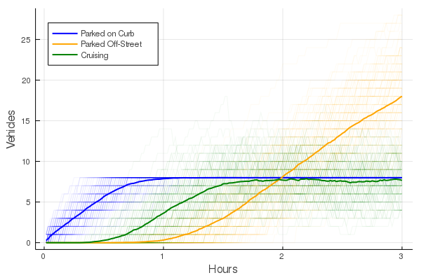
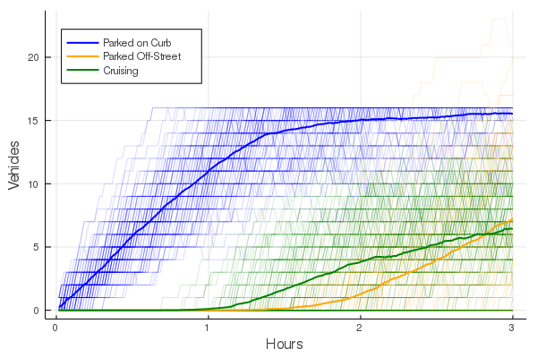
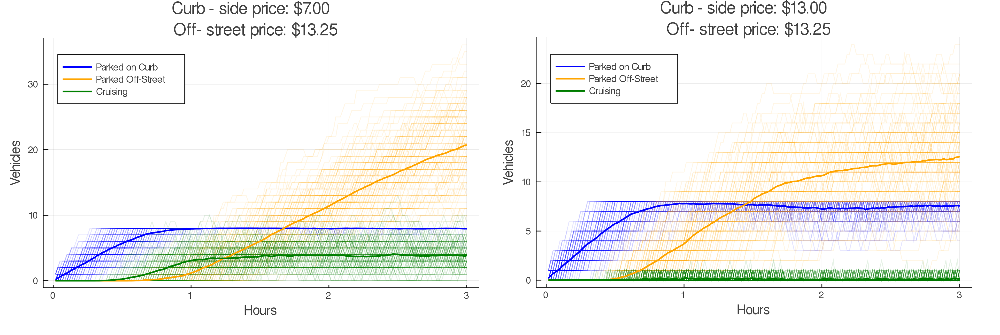

Cruising for parking may seem to be an innocent act, however its mere existence stems from misaligned incentives. An individual will only cruise given that they value their time & fuel cost less than potential savings from parking off-street (parking garage/lot). The individual agent is unlikely to take into account the impact which their cruising has on other road users, both in terms of congestion and the additional pollution they emit. Although this may seem somewhat trite, Donald Shoup (2006) presents a model which aims to bring to light the extent which these negative externalities can reach.
Aligning the price of curb-side parking and off-street parking generally removes the incentive to cruise. Furthermore, as the curb-side prices are often regulated according to the local departments of transportation, increasing curb-side prices may act as another revenue stream for local governments. This creates a potential triple-dividend, where increases in curb-side parking can reduce emissions and congestion and the government can be used to offset other distortionary taxes. This post will follow Shoup’s model, based on the julia implementation which you can find over on my github. For a more detailed overview of the modelling, the github repository contains an interactive notebook which discusses the model implementation.
For the sake of brevity, I will only briefly cover the model, and conveniently, there is only one equation to discuss:
\(c^* = \frac{t(m-p)}{f+nv}\)
In the above equation, \(t\) is the desired parking duration in hours, \(m\) is the hourly price of off-street parking, and \(p\) is the hourly price of parking on the curb. This makes the numerator on the right hand side the potential savings from parking on the curb contra parking off-street. \(f\), \(v\), and \(n\) are the hourly fuel cost, hourly value of time, and the number of people in the car respectively. This means that the denominator represents the hourly cost one incurs from cruising. Resultantly, \(c^*\) is the maximum amount of time which an agent is willing to cruise for.
Based on this one equation, one can easily start to think of different policy tools which could be used to the incentive to cruise. Using the price levels for downtown Chicago, where \(p=\$1.00\) and \(m=\$13.25\), and assuming a hourly value of time centered around \(\$25\) with a fuel cost of \(\$0.74\), we can simulate the extent of cruising. Using a similar example to the paper, where we assume that there are 8 available parking spaces, we get the following scenario:
 First, the available curb-side parking fills up (blue line). Once all the curb-side spaces have been occupied, agents start to cruise to see if an availability opens up (green line). Eventually, when some agents have cruised for their \(c*\) amount of time, they will decide to park off-street (yellow line). Over time, as agents leave from the curb-side parking, they immediately get occupied with the cruisers, meaning that curb-side parking is constantly at full capacity.
We can also see a plateauing of the number of agents who are cruising for parking at around 8. In this scenario, a total of 109 km were cruised during the 3 hour time-frame, assuming a coasting speed of 8km/h. Based on the emissions of a 2020 Honda Civic, this would have amounted to approximately 13kg of CO\(_2\) emissions and 15g of NO\(_x\).
What may seem like an obvious answer, is to increase the amount of curbside parking availability. Ignoring limitations to increasing desirable curb-side parking, increasing the amount of available parking may result in temporarily alleviating the amount of cruising.

Doubling the amount of available curb-side parking space from 8 to 16 has an immediate impact on the amount of cruising in the short term. Unfortunately, the same story as before repeats itself. As soon as the available curb-side parking has been occupied, the cruising persists, returning to the same stable point of approximately 8 agents cruising for parking. That being said, increasing the amount of available parking, can be an effective method of reducing coasting if the demand for parking is sufficiently low, and periods of high demand are sufficiently short.
By far the most efficient method of reducing the incentive to cruise is to align the price of parking on the curb versus the price of parking off-street. By matching the prices, the numerator in our equation becomes zero and the cruising incentive disappears. As the price of parking on the curb and off-street the incentive to cruise dwindles until at the point where \(p=m\) there is no longer any gains had from cruising.

For reducing the incentive to cruise, there is no difference between increasing the price of curb-side parking versus reducing the cost of off-street parking. This can easily be seen by observing that the first derivatives are the same with the exception of a minus sign in front of \(\frac{\partial c^*}{\partial p}\):
\[\frac{\partial c^*}{\partial p} = -\frac{t}{f+nv}\] \[\frac{\partial c^*}{\partial m} = +\frac{t}{f+nv}\] That being said, reducing the price of off-street parking prices would incentivise more car owners to travel to urban areas rather than using public transport. This would increase the overall demand for parking, however, at the low prices, private companies may be unwilling to provide parking services, leaving the onus of providing parking on local governments. Furthermore, supply-side policies are not necessarily feasible in large metropolitan areas where the land fetches exorbitant prices.
I would also like to briefly give some attention to a few of the other variables which have been somewhat neglected so far. Incentivising carpooling would increase the \(n\) term in the denominator, resulting in an increased cost of cruising since the time-cost is born by two agents. Similarly, imposing higher fuel taxes will increase \(f\), affecting the hourly cost of cruising. Lastly, I’d like to bring to attention the potential implication of limiting parking time. Limiting the amount of time an individual can park off-street would decrease the incentive to cruise for long periods of time. One reason for this would be due to the option between parking on the curb versus off-street no longer face the value of \(t\), and this parking time preference would need to be captured. On the other hand, limiting the parking duration may also act as a way of segregating the market if agents are unwilling to change their parking duration. In this case, less agent would interested in parking on the curb since we will only be considering a smaller set within the market. This said, due to the lack of prior expectations or a way of modelling different markets, this model is not apt to answer this question in full, however, I think it is some fun food for thought.
Although at first, the concept of cruising for parking may seem somewhat banal. Many states and cities have perverse incentives set up, incentivising individuals to cruise for a ‘better’ parking deal. This can play an unexpectedly large role in local pollution and congestion. Although several policy tools can help reduce the cruising incentive, it is only by bringing the price of curb-side parking in alignment with the off-street price that we can get a triple dividend.
Feature image source: www.unsplash.com